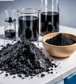

Матрицы и механизмы
Битумные, цементные, гипсовые и полимерные матрицы. Совместимость зависит от химии поверхности, размера частиц, влажности и условий твердения.
Состав → структура → свойства.
Подробнее
Для строительных композитов рассматриваются битумные, цементные, гипсовые и полимерные матрицы. Совместимость отхода с конкретной матрицей зависит от химии поверхности, размера частиц и влажности, а также от условий смешивания и твердения. Поэтому для каждой матрицы способ подготовки отхода и его дозировку необходимо определять отдельными экспериментами.